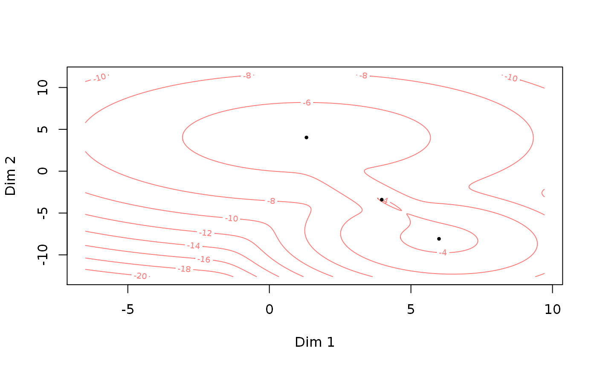
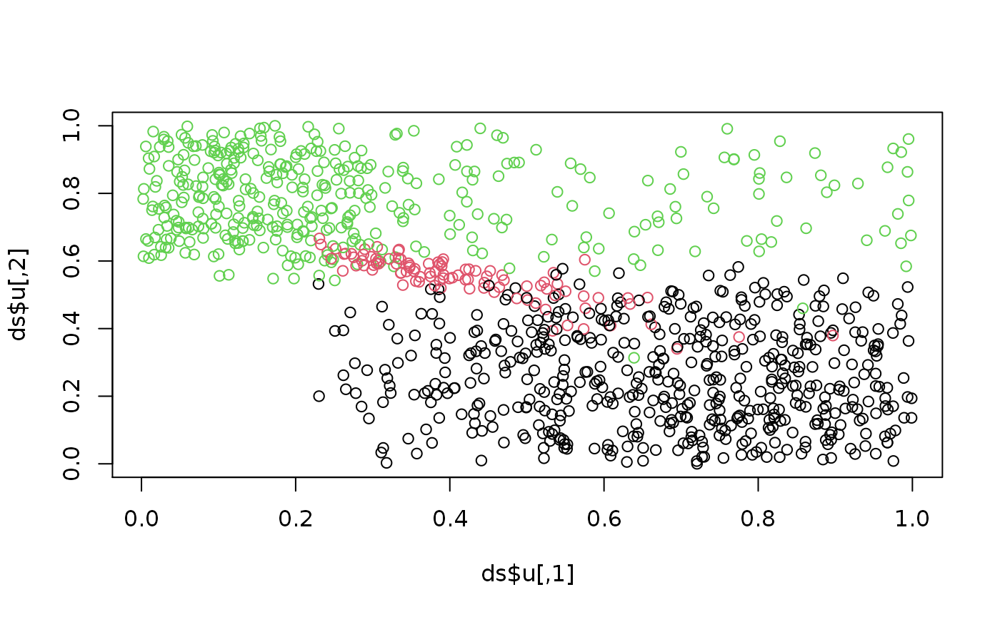
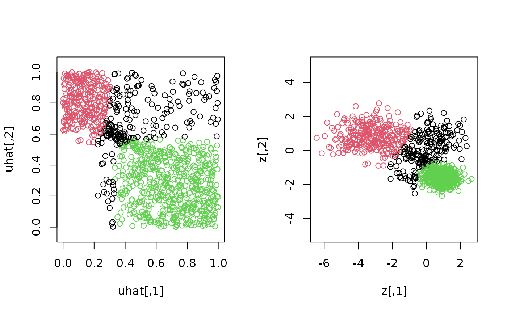
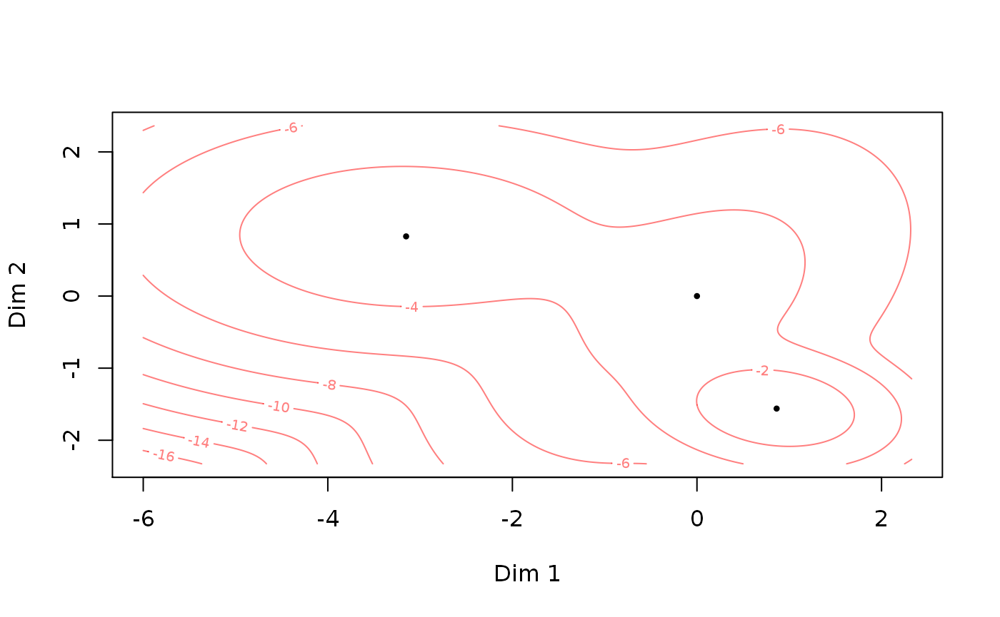

vignettes/usage-example-general-model.Rmd
usage-example-general-model.RmdThis is a quick tutorial for using the general GMCM for unsupervised clustering.
The GMCM1 package is loaded.
If GMCM is not installed, please uncomment the above line and rerun the script to install from CRAN. The development version can be installed from GitHub following the instructions there.
First, we simulate some toy data. We wish to simulate, say, 1000 observations of 2-dimensiones each of which stems from one of 3 components. In order to do so, we construct a parameter object theta and simulate from the GMCM.

## List of 4
## $ u : num [1:1000, 1:2] 0.0452 0.5879 0.8876 0.0706 0.4786 ...
## $ z : num [1:1000, 1:2] -2.71 5.19 7.37 -1.77 4.46 ...
## $ K : int [1:1000] 3 3 1 3 1 1 3 1 1 1 ...
## $ theta:List of 5
## ..$ m : num 3
## ..$ d : num 2
## ..$ pie : Named num [1:3] 0.5084 0.0989 0.3928
## .. ..- attr(*, "names")= chr [1:3] "pie1" "pie2" "pie3"
## ..$ mu :List of 3
## .. ..$ comp1: num [1:2] 5.99 -8.08
## .. ..$ comp2: num [1:2] 3.97 -3.4
## .. ..$ comp3: num [1:2] 1.31 4.03
## ..$ sigma:List of 3
## .. ..$ comp1: num [1:2, 1:2] 2.55 -0.44 -0.44 3.77
## .. ..$ comp2: num [1:2, 1:2] 1.06 -1.6 -1.6 3.19
## .. ..$ comp3: num [1:2, 1:2] 11.2561 -0.0595 -0.0595 10.2816
## ..- attr(*, "class")= chr "theta"As can be seen, the SimulateGMCMData function returns a list containing the copula observations u, the unobserved process z, the latent groups K, and the theta used for simulation.
Plotting the true copula realisations and colouring by the true classes shows what we intend to estimate and recover:

A ranking of u (or z) corresponds to what would be the data in a real application.
To fit a general GMCM, we must choose some initial parameters. The choose.theta is a (sometimes) helpful default we here invoke explicitly:
## theta object with d = 2 dimensions and m = 3 components:
##
## $pie
## pie1 pie2 pie3
## 0.300 0.345 0.355
##
## $mu
## $mu$comp1
## [1] 0 0
##
## $mu$comp2
## [1] -2.097679 1.557202
##
## $mu$comp3
## [1] 1.039218 -1.846066
##
##
## $sigma
## $sigma$comp1
## [,1] [,2]
## [1,] 1 0
## [2,] 0 1
##
## $sigma$comp2
## [,1] [,2]
## [1,] 0.4001925 0.000000
## [2,] 0.0000000 0.489384
##
## $sigma$comp3
## [,1] [,2]
## [1,] 0.8003757 0.0000000
## [2,] 0.0000000 0.5226159The function needs to know how many components we want to estimate though this number may very well be unknown in practice.
With the data loaded and defined initial parameters, the model is now fitted.
est_theta <- fit.full.GMCM(u = uhat, # Ranking function is applied automatically
theta = init_theta,
method = "NM",
max.ite = 5000,
verbose = FALSE)
print(est_theta)## theta object with d = 2 dimensions and m = 3 components:
##
## $pie
## pie1 pie2 pie3
## 0.2085000 0.2745018 0.5169982
##
## $mu
## $mu$comp1
## [1] 0 0
##
## $mu$comp2
## [1] -3.1515792 0.8279297
##
## $mu$comp3
## [1] 0.8631953 -1.5608324
##
##
## $sigma
## $sigma$comp1
## [,1] [,2]
## [1,] 1.0000000 0.3978458
## [2,] 0.3978458 1.0000000
##
## $sigma$comp2
## [,1] [,2]
## [1,] 1.49969539 -0.01741992
## [2,] -0.01741992 0.43467752
##
## $sigma$comp3
## [,1] [,2]
## [1,] 0.2798609 -0.0292142
## [2,] -0.0292142 0.1083622The fitting method is set to "NM" with a maximum number of iterations of 100.
The estimated parameters are used to calculated posterior component probabilities on which the classification is based:
## int [1:1000] 2 1 3 2 3 3 2 3 3 1 ...If it is of interest, the posterior probability can be computed directly using
The number of observations in each class can be e.g. counted by
## membership
## 1 2 3
## 200 272 528The results are also displayed by plotting
par(mfrow = c(1,2))
plot(uhat, col = membership, asp = 1) # Plot of estimated copula values
z <- GMCM:::qgmm.marginal(uhat, theta = est_theta) # Estimate latent process
plot(z, col = membership, asp = 1) # Plot of estimated latent process
The fitted theta object can also be plotted directly:

This report was generated using rmarkdown2 and knitr3 under the session given below.
## R version 3.6.1 (2017-01-27)
## Platform: x86_64-pc-linux-gnu (64-bit)
## Running under: Ubuntu 16.04.6 LTS
##
## Matrix products: default
## BLAS: /home/travis/R-bin/lib/R/lib/libRblas.so
## LAPACK: /home/travis/R-bin/lib/R/lib/libRlapack.so
##
## locale:
## [1] LC_CTYPE=en_US.UTF-8 LC_NUMERIC=C
## [3] LC_TIME=en_US.UTF-8 LC_COLLATE=en_US.UTF-8
## [5] LC_MONETARY=en_US.UTF-8 LC_MESSAGES=en_US.UTF-8
## [7] LC_PAPER=en_US.UTF-8 LC_NAME=C
## [9] LC_ADDRESS=C LC_TELEPHONE=C
## [11] LC_MEASUREMENT=en_US.UTF-8 LC_IDENTIFICATION=C
##
## attached base packages:
## [1] stats graphics grDevices utils datasets methods base
##
## other attached packages:
## [1] GMCM_1.4
##
## loaded via a namespace (and not attached):
## [1] Rcpp_1.0.2 rprojroot_1.3-2 crayon_1.3.4
## [4] digest_0.6.20 assertthat_0.2.1 MASS_7.3-51.4
## [7] R6_2.4.0 backports_1.1.4 magrittr_1.5
## [10] ellipse_0.4.1 evaluate_0.14 stringi_1.4.3
## [13] rlang_0.4.0 fs_1.3.1 rmarkdown_1.15
## [16] pkgdown_1.4.0.9000 desc_1.2.0 tools_3.6.1
## [19] stringr_1.4.0 yaml_2.2.0 xfun_0.9
## [22] compiler_3.6.1 memoise_1.1.0 htmltools_0.3.6
## [25] knitr_1.24Please cite the GMCM paper1 if you use the package or shiny app.